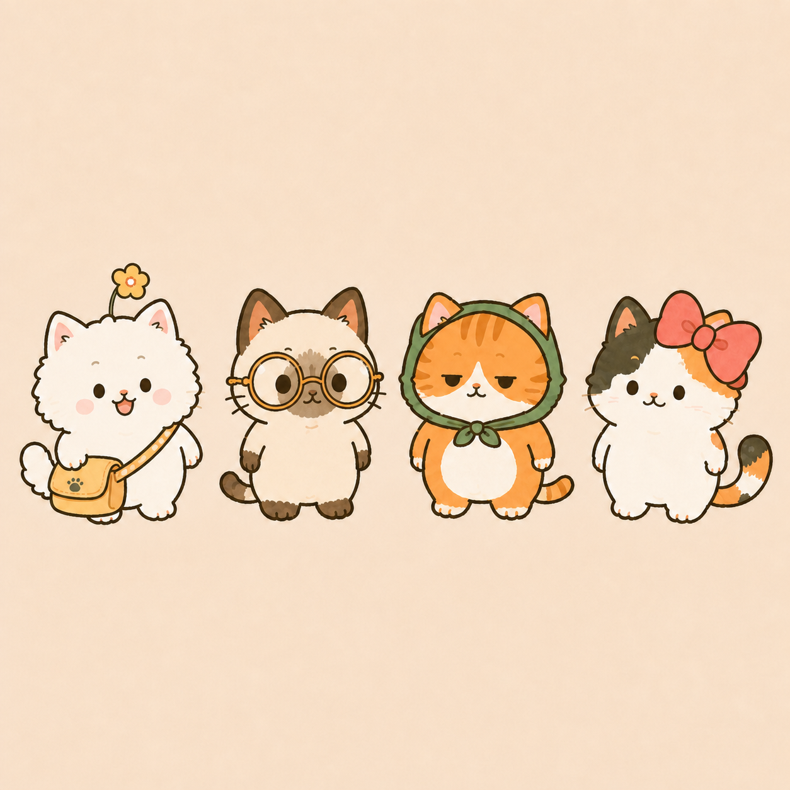
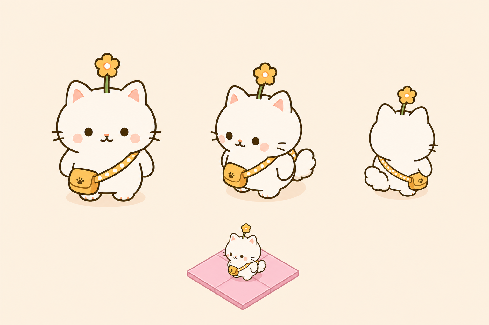
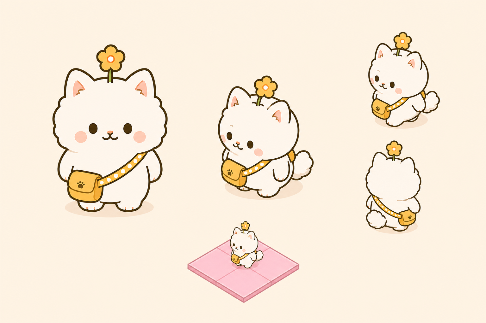

团团下一版猫画法参考板
先看别人怎么画猫：胡须、尾巴、挎包、平面线条

身份源
团团必须保留：黄花、黄包、点状背带、胡须
不能因为平面化就把猫的胡须和角色识别点删掉。
目标场景
场景里的猫是平面符号，不是体块结构图
线条少、轮廓大、细节只保留能在小尺寸读出的部分。
小尺寸动作
Neko Atsume：胡须是符号，动作靠大形变化
尾巴和身体都是块面，不靠复杂穿插线表达。
Sprite Sheet
动作参考：大头短身，腿脚只是小符号
如果动作多，仍然是外轮廓变化，不堆结构线。
游戏气质
Cats & Soup：圆头、低重心、松弛动作
可爱来自比例和姿态，不是毛边和复杂表情。
场景融合
角色在场景里要读成“一个图标化小生命”
不用让每个配饰都转透视，先保证整体亲和。
脸部符号
胡须短而清楚，眼鼻嘴集中，不抢轮廓
团团每边 2 条胡须就够，线要比外轮廓细。
猫脸比例
脸部大留白 + 小五官，才有呆萌空间
不是死板，而是五官少、位置软、表情留白。
尾巴处理
尾巴用一根清楚大轮廓，不要波浪毛边
尾巴可以圆、短、翘，但不能变成毛发曲线展示。

上一版问题
胡须回来了，但尾巴和挎包仍没想明白
下一版要把尾巴平面化，把包当贴片，不再绕体。

反例
这张太想保留结构信息，线条穿插过多
下一版不能再画头部侧线、身体侧线和复杂包带。
动作归纳
动作可以多，但每张都应该是干净剪影
先做轮廓和符号，再考虑配饰变化。
胡须
每边 2 条短线，细于外轮廓；它是猫脸识别点。
尾巴
圆弧或团块轮廓，不再使用波浪线和毛边。
挎包
按平面贴片画，一条斜带 + 一个小包，少穿插。
画法
外轮廓优先，内部结构线能删就删。